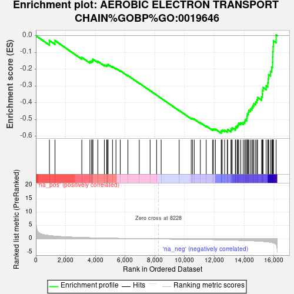
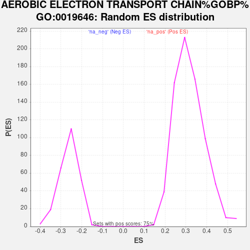

| Dataset | PAL_vs_CTL_ranked |
| Phenotype | NoPhenotypeAvailable |
| Upregulated in class | na_neg |
| GeneSet | AEROBIC ELECTRON TRANSPORT CHAIN%GOBP%GO:0019646 |
| Enrichment Score (ES) | -0.5817704 |
| Normalized Enrichment Score (NES) | -2.22168 |
| Nominal p-value | 0.0 |
| FDR q-value | 7.237081E-4 |
| FWER p-Value | 0.004 |

| SYMBOL | RANK IN GENE LIST | RANK METRIC SCORE | RUNNING ES | CORE ENRICHMENT | |
|---|---|---|---|---|---|
| 1 | CYCS | 912 | 1.235 | -0.0284 | No |
| 2 | SDHD | 1286 | 1.000 | -0.0288 | No |
| 3 | MT-ND4L | 3089 | 0.487 | -0.1293 | No |
| 4 | MT-CO1 | 3633 | 0.402 | -0.1538 | No |
| 5 | MT-CO2 | 3738 | 0.389 | -0.1514 | No |
| 6 | MT-CYB | 3822 | 0.376 | -0.1480 | No |
| 7 | NDUFA5 | 3833 | 0.374 | -0.1401 | No |
| 8 | MT-ND2 | 4165 | 0.330 | -0.1531 | No |
| 9 | MT-ND5 | 4604 | 0.278 | -0.1740 | No |
| 10 | SDHC | 4759 | 0.263 | -0.1775 | No |
| 11 | MT-ND6 | 4794 | 0.258 | -0.1738 | No |
| 12 | NDUFC2 | 4859 | 0.252 | -0.1720 | No |
| 13 | MT-ND4 | 5153 | 0.222 | -0.1851 | No |
| 14 | MT-ND1 | 5386 | 0.198 | -0.1950 | No |
| 15 | UQCRHL | 5675 | 0.172 | -0.2089 | No |
| 16 | MT-ND3 | 6189 | 0.130 | -0.2377 | No |
| 17 | NDUFAF1 | 6952 | 0.080 | -0.2831 | No |
| 18 | UQCRB | 7682 | 0.031 | -0.3275 | No |
| 19 | NDUFS1 | 8117 | 0.005 | -0.3542 | No |
| 20 | NDUFV2 | 8424 | -0.011 | -0.3729 | No |
| 21 | SLC25A51 | 9635 | -0.088 | -0.4458 | No |
| 22 | NDUFA6 | 10446 | -0.146 | -0.4927 | No |
| 23 | NDUFB8 | 10534 | -0.153 | -0.4946 | No |
| 24 | MT-CO3 | 10647 | -0.161 | -0.4978 | No |
| 25 | COX6C | 11059 | -0.195 | -0.5189 | No |
| 26 | NDUFS4 | 11453 | -0.227 | -0.5380 | No |
| 27 | SDHB | 11876 | -0.267 | -0.5581 | No |
| 28 | NDUFV3 | 11952 | -0.274 | -0.5565 | No |
| 29 | NDUFA9 | 12072 | -0.287 | -0.5574 | No |
| 30 | NDUFA1 | 12467 | -0.333 | -0.5742 | Yes |
| 31 | NDUFB6 | 12468 | -0.333 | -0.5667 | Yes |
| 32 | UQCRFS1 | 12533 | -0.341 | -0.5629 | Yes |
| 33 | NDUFB2 | 12692 | -0.360 | -0.5645 | Yes |
| 34 | UQCRQ | 12877 | -0.383 | -0.5672 | Yes |
| 35 | COX7A2 | 12892 | -0.385 | -0.5593 | Yes |
| 36 | UQCRH | 13123 | -0.415 | -0.5641 | Yes |
| 37 | NDUFS5 | 13138 | -0.417 | -0.5556 | Yes |
| 38 | NDUFA8 | 13202 | -0.427 | -0.5498 | Yes |
| 39 | COX7C | 13412 | -0.459 | -0.5523 | Yes |
| 40 | COX7B | 13439 | -0.463 | -0.5434 | Yes |
| 41 | NDUFA4 | 13540 | -0.479 | -0.5387 | Yes |
| 42 | COX6B1 | 13594 | -0.485 | -0.5310 | Yes |
| 43 | NDUFB5 | 13641 | -0.493 | -0.5226 | Yes |
| 44 | NDUFB3 | 13774 | -0.518 | -0.5191 | Yes |
| 45 | UQCRC1 | 13942 | -0.548 | -0.5170 | Yes |
| 46 | NDUFA10 | 14043 | -0.566 | -0.5103 | Yes |
| 47 | UQCC3 | 14082 | -0.575 | -0.4996 | Yes |
| 48 | UQCR10 | 14188 | -0.597 | -0.4926 | Yes |
| 49 | UQCRC2 | 14198 | -0.599 | -0.4795 | Yes |
| 50 | NDUFS2 | 14224 | -0.605 | -0.4673 | Yes |
| 51 | NDUFA3 | 14283 | -0.618 | -0.4569 | Yes |
| 52 | NDUFS6 | 14319 | -0.625 | -0.4449 | Yes |
| 53 | COX6A2 | 14426 | -0.645 | -0.4368 | Yes |
| 54 | NDUFS8 | 14525 | -0.669 | -0.4277 | Yes |
| 55 | NDUFB4 | 14592 | -0.687 | -0.4162 | Yes |
| 56 | NDUFV1 | 14662 | -0.704 | -0.4045 | Yes |
| 57 | NDUFS7 | 14779 | -0.739 | -0.3949 | Yes |
| 58 | NDUFB1 | 14867 | -0.763 | -0.3829 | Yes |
| 59 | COX8A | 14906 | -0.779 | -0.3676 | Yes |
| 60 | COX5A | 15180 | -0.872 | -0.3647 | Yes |
| 61 | SDHAF2 | 15226 | -0.896 | -0.3472 | Yes |
| 62 | UQCRFS1P1 | 15235 | -0.901 | -0.3272 | Yes |
| 63 | COX6A1 | 15277 | -0.919 | -0.3089 | Yes |
| 64 | COX5B | 15486 | -1.025 | -0.2985 | Yes |
| 65 | NDUFAB1 | 15596 | -1.098 | -0.2804 | Yes |
| 66 | NDUFB7 | 15624 | -1.117 | -0.2567 | Yes |
| 67 | UQCR11 | 15653 | -1.134 | -0.2327 | Yes |
| 68 | NDUFB9 | 15778 | -1.240 | -0.2122 | Yes |
| 69 | CYC1 | 15855 | -1.326 | -0.1868 | Yes |
| 70 | NDUFC1 | 15915 | -1.399 | -0.1587 | Yes |
| 71 | SDHA | 15924 | -1.413 | -0.1271 | Yes |
| 72 | COX4I1 | 15931 | -1.423 | -0.0952 | Yes |
| 73 | NDUFA2 | 15950 | -1.447 | -0.0634 | Yes |
| 74 | NDUFS3 | 15974 | -1.480 | -0.0313 | Yes |
| 75 | NDUFB10 | 16155 | -2.071 | 0.0046 | Yes |
